第 20 讲：面向数据编程与 Job System
从多核并行、缓存友好到 ECS：让引擎在真实硬件上跑得更快的一套思维与工具
◆ 学完这一讲，你应该能
能解释进程/线程、抢占式多任务、上下文切换、数据竞争、锁与原子操作这些并行编程基础概念
能说明为什么内存墙与缓存局部性会决定性能，并会用 AoS/SoA、减少指针链、避免分支预测失败等手段优化数据布局
能画出任务图（DAG）并解释 Job System 如何用 fiber + 工作窃取调度任务
能说清 OOP 在游戏引擎中的三个典型问题（代码放哪、继承树方法散射、性能与可测性），并理解 DOP 的出发点
能对照 Unity DOTS（ECS + C# Job System + Burst）与 UE Mass 框架，知道两边 Entity/Component/System 的对应物
核心结论速记
代码不是跑在纸面上的：硬件与操作系统决定了并行的真实代价，线程切换、缓存未命中、分支预测失败都会吃掉性能。
多核时代单核频率见顶，性能提升主要靠并行；但并行会带来数据竞争，锁能保证正确性却带来挂起/唤醒、死锁、优先级反转等开销。
原子操作与无锁编程可以避免锁的开销，但要小心编译器重排与 CPU 乱序执行，需要内存屏障/原子语义来约束顺序。
游戏引擎的并行框架从固定多线程 → Fork-Join 线程池 → 任务图（DAG）→ 基于 fiber 的 Job System 演进，目标是负载均衡、低切换开销、易表达依赖。
性能敏感编程的核心是缓存：利用时间/空间局部性、按缓存行组织数据、避免伪共享、减少指针追逐、用数据布局替代分支。
OOP 把数据和行为绑在对象里，导致内存分散、虚函数跳转、代码归属不清、难测试；DOP 反过来以数据布局为中心组织代码。
ECS 是 DOP 的工程化落地：Entity 是 ID，Component 是纯数据，System 是批量处理同构数据的逻辑；Unity DOTS 与 UE Mass 都按 Archetype/Chunk 紧凑存储组件。
Job System 让逻辑程序员用“小任务 + 依赖”表达并行，由调度器把任务映射到固定数量的工作线程上执行，避免频繁创建线程。
011. 为什么“写代码”不等于“跑得快”：硬件与操作系统的现实
这一讲开场先泼一盆冷水：代码执行并不像看起来那么简单。你写的 for 循环、虚函数调用、new 一个对象，最终都要落到具体的 CPU、缓存、操作系统调度器上。同一段逻辑，数据放得不一样、线程怎么切，性能可能差一个数量级。
先厘清两个最基础的概念：
- 进程（Process）：一个应用程序的实例，拥有自己独立的地址空间。进程之间默认不共享内存。
- 线程（Thread）：进程内的执行流，同一进程的线程共享地址空间，因此可以方便地共享数据——这也正是数据竞争的根源。
现代操作系统普遍采用抢占式多任务（Preemptive Multitasking）：调度器可以在任意时刻打断当前任务（通过中断/时钟片），把 CPU 让给另一个任务。好处是响应性好、不会因为一个死循环卡死系统；代价是上下文切换（Context Switch）：保存当前线程的寄存器、栈指针等状态，再恢复另一个线程的状态。这个动作要进内核，开销远大于一次普通函数调用。
所以这一讲后面所有的设计——线程池、fiber、Job System——本质上都在干一件事：在拿到并行收益的同时，把“切换”和“同步”的开销压到最低。
直觉类比：线程像餐厅里的服务员，上下文切换像服务员放下手里的活去另一桌。切换本身不产出价值，所以服务员越少切换、越专注，翻台率越高。
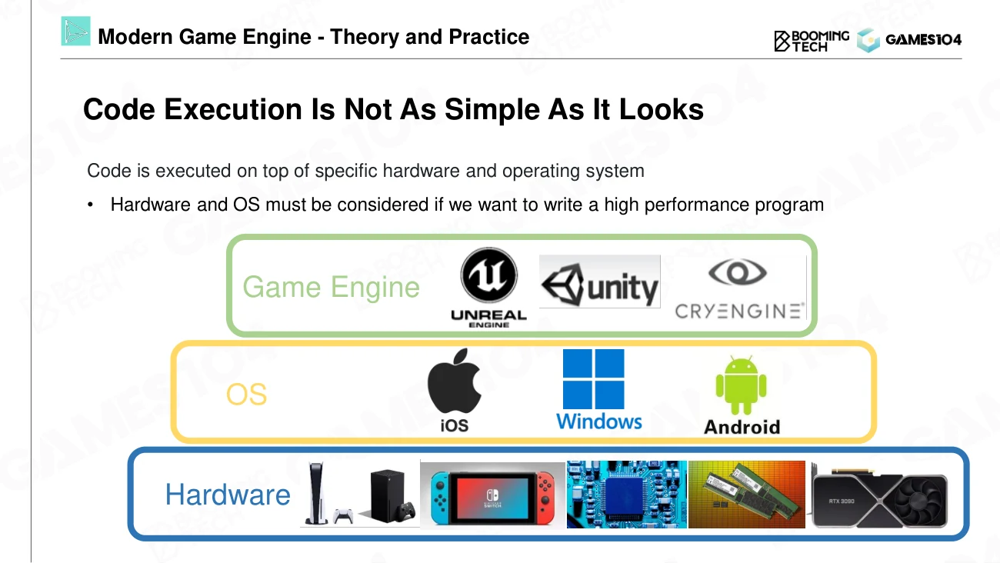
常见坑
把“线程越多越快”当默认 → 线程数超过物理核心数后，切换开销和缓存争用会让性能不升反降 → 用固定工作线程数（约等于核心数）并配合任务队列。
在热路径里频繁创建/销毁线程 → 每次创建都要向 OS 申请资源 → 改用线程池复用线程。
UE / Unity 落地
UE 的 TaskGraph 与 Unity 的 Job System 都不会为每个任务新建线程，而是维护固定工作线程池，这正是为了避免本节的上下文切换开销。
Unity 中
System.Threading.Thread属于“托管线程”，与 Job System 的工作线程不是一回事；游戏逻辑里应优先用 Job/任务而不是自己开线程。
022. 并行编程基础：完美并行、数据竞争与锁的代价
并行问题按依赖程度可以排成一条谱：
- 完美并行（Embarrassingly Parallel）：任务之间几乎无依赖、无需通信。比如对每个粒子独立积分、对每个像素独立着色。这类问题并行收益最直接。
- 另一端是强依赖问题：后一步必须等前一步的结果，并行度很低。
只要多个线程同时访问同一内存位置，且至少有一个是写，就可能发生数据竞争（Data Race），结果取决于调度顺序，表现为“偶发 bug”。最常用的解法是锁（Lock）：同一时刻只允许一个线程进入临界区（Critical Section），保护共享资源。
但锁不是免费的午餐，课件专门列了锁的若干问题：
- 挂起/恢复线程有开销：拿不到锁的线程被挂起，唤醒又要上下文切换。
- 死锁（Deadlock）：两个线程各持一把锁又等对方的锁，永远等下去。
- 优先级反转（Priority Inversion）：低优先级线程持锁，高优先级线程被阻塞，中优先级线程却一直抢占 CPU。
- 锁的粒度难把握：太粗并行度低，太细容易出错且开销大。
于是有了原子操作（Atomic Operation）与无锁编程（Lock-free Programming）：用 CPU 提供的原子读/写、比较并交换（CAS）等指令，在不加锁的情况下保证单个内存位置的更新是原子的。课件还区分了 lock-free 与 wait-free：前者保证系统整体总有进展（但某个线程可能被饿死），后者保证每个线程都在有限步内完成，更强也更难写。
工程建议：绝大多数游戏逻辑用“任务 + 依赖”或“每线程私有数据 + 最后合并”就能避开锁；真需要无锁结构时，优先用引擎/标准库提供的成熟容器，而不是手搓。
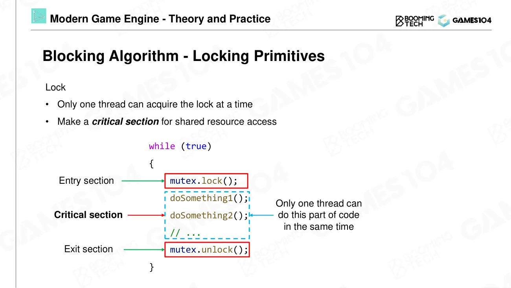
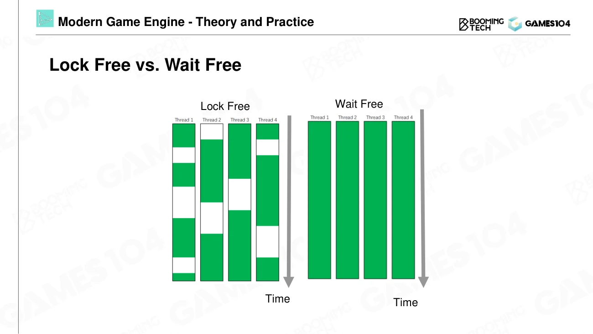
常见坑
以为“读-改-写”是原子的 →
counter++实际是读、加、写三步，多线程下会丢更新 → 用原子变量或把更新收拢到单线程。加锁顺序不一致 → 两个系统各持一把锁互相等待 → 死锁 → 全局约定锁的获取顺序，或改用无锁队列/任务依赖。
锁保护范围过大 → 并行度下降、线程频繁排队 → 缩小临界区，只保护真正共享的写操作。
UE / Unity 落地
UE 提供
FCriticalSection（临界区）、FScopeLock（RAII 加锁）、TAtomic等；Unity C# Job System 则通过安全检查在编辑器里直接报出数据竞争，而不是让你自己加锁。Unity 的
NativeContainer（如NativeArray）配合[ReadOnly]标注，能在调度层面检测读写冲突，这是把“锁的问题”前移到“依赖声明”的思路。
033. 看不见的顺序：编译器重排、CPU 乱序与内存屏障
即使你写对了加锁，还有一个更隐蔽的坑：你写的顺序不一定是执行的顺序。
- 编译器重排（Compiler Reordering）：优化器为了减少访存、填充流水线，会调整指令顺序。课件给的例子是
a = b + 1; b = 1;这类语句在开启优化后可能被换序。 - CPU 乱序执行（Out-of-order Execution）：不同 CPU 的优化策略差别很大，提供的内存模型也不同（强/弱内存模型）。在弱内存模型上，一个核心的写对另一个核心可见的顺序可能和你代码里的顺序不一致。
这就导致：同步不仅要求“原子”，还要求“顺序”。解决办法是使用内存屏障（Memory Barrier/Fence）或带语义的原子操作（acquire/release），告诉编译器和 CPU：这里的读写不能越过屏障重排。
对游戏引擎开发者来说，实际结论是：
- 不要自己发明无锁同步协议，除非你非常清楚目标平台的内存模型。
- 用标准库/引擎封装好的原子类型与屏障。
- 调试“只在 Release 下偶发”的并行 bug 时，先怀疑重排与可见性，而不是逻辑写错。
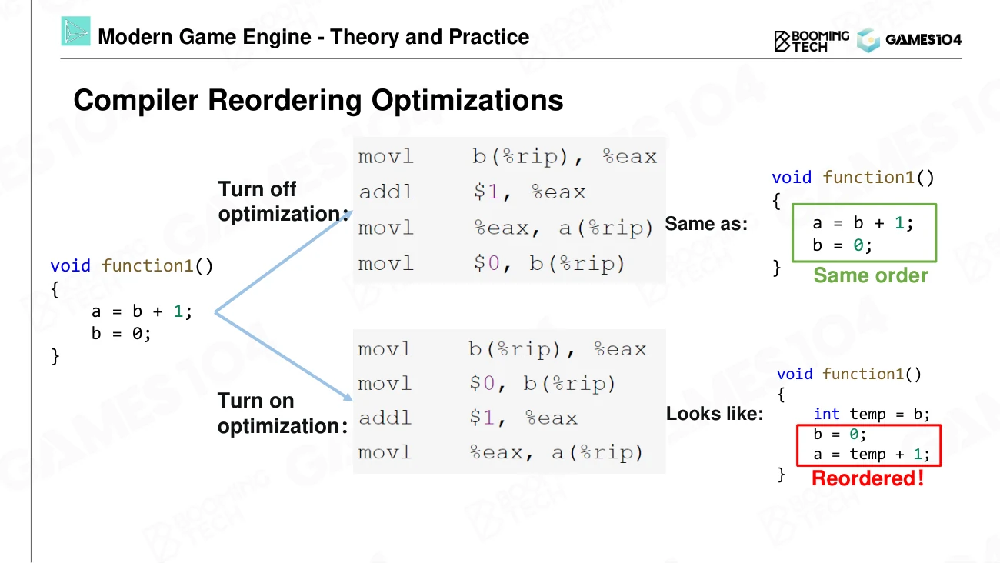
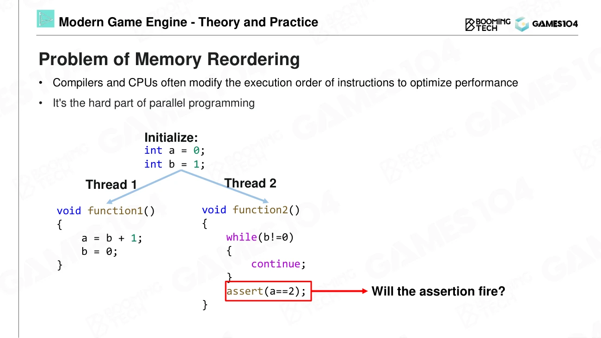
常见坑
在 Debug 下测试通过就认为并行代码正确 → Debug 往往关优化、乱序少 → 必须在 Release 下做压力测试。
用普通变量做线程间标志位 → 编译器可能把它缓存进寄存器，导致对方永远看不到更新 → 用原子变量或加屏障。
以为 x86 上没问题就到处通用 → 不同平台内存模型不同 → 跨平台代码统一用标准原子语义。
UE / Unity 落地
UE 的
TAtomic、FPlatformAtomics封装了平台相关的原子与屏障；Unity 的 Job System 通过依赖声明把顺序问题交给调度器，业务代码里基本不直接写屏障。Burst 编译器在生成 SIMD/多线程代码时会做激进优化，因此 Unity 要求 Job 内只使用 NativeContainer 等受控类型，避免别名分析失效带来的重排风险。
044. 游戏引擎的并行框架演进：从固定线程到任务图
把并行落到引擎架构上，课件给了一条清晰的演进路线：
- 固定多线程（Fixed Multi-thread）：渲染一个线程、模拟一个线程、逻辑一个线程、网络一个线程……实现简单、职责清楚。问题是负载不均衡：某一帧物理很重、渲染很轻，核就闲着；而且核数增加时无法扩展。
- Fork-Join + 线程池：把可数据并行的工作拆开（fork），交给线程池执行，再汇合（join）。线程池避免频繁创建线程。问题是对逻辑程序员不友好：要自己决定怎么切、切几份；线程开太多又会带来切换开销。
- 任务图（Task Graph）：用有向无环图（DAG）表达任务与依赖——节点是任务，边是依赖。调度器按依赖就绪顺序派发，天然支持负载均衡和复杂依赖。
- Job System：在任务图之上，用 fiber 作为执行上下文、固定工作线程绑定核心，进一步压低切换开销（下一节展开）。
UE 的并行框架就属于 Fork-Join 一脉：它有命名线程（Named Thread）（如 GameThread、RenderThread，由其他系统创建并挂到并行框架上）和工作线程（Worker Thread），任务通过 TaskGraph 表达依赖。
记住这张图：任务图是“要做什么、谁依赖谁”，Job System 是“怎么在有限的核心上高效地做完”。
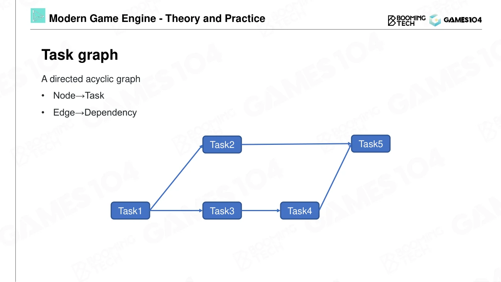
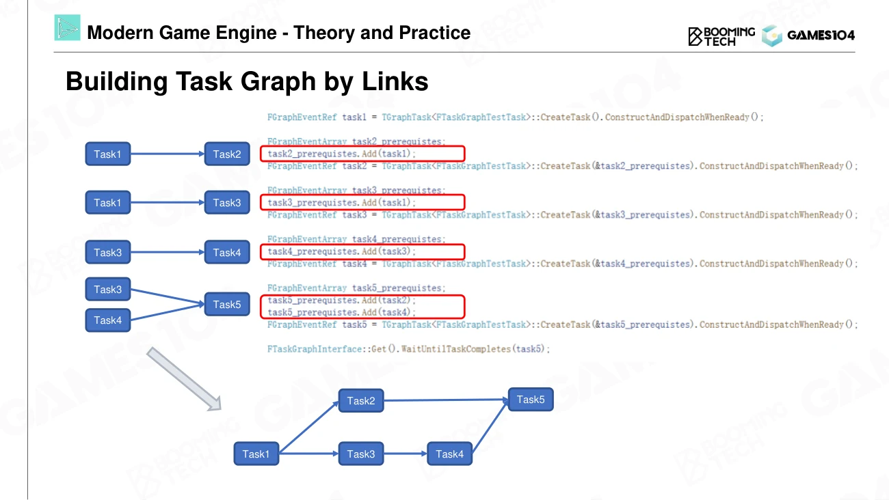
常见坑
固定多线程下按“系统”分线程 → 某系统负载突增时其他核空闲 → 改用任务化拆分 + 线程池。
任务图里出现环 → 调度器永远等不到就绪 → 构建依赖时做环检测，或保证依赖只指向更早阶段的任务。
任务粒度太细 → 调度开销超过计算本身 → 合并小任务，保证单个任务有足够计算量。
UE / Unity 落地
UE 的 TaskGraph 用
FGraphEventRef表达依赖，FFunctionGraphTask::CreateAndDispatchWhenReady派发任务；GameThread/RenderThread 是命名线程。Unity 的 C# Job System 用
JobHandle表达依赖并Schedule/Complete，本质也是任务图，只是 API 更面向数据。
055. Job System 的核心：协程、Fiber 与“一核一线程”
为什么有了任务图还需要 Job System？因为线程切换太贵。课件给出的答案是：把“执行单元”和“执行上下文”拆开。
先看协程（Coroutine）：它是一种轻量执行上下文，能在某个点让出（yield）、之后从原地恢复，而不需要内核参与调度。和线程相比：
- 线程由 OS 调度，协程由程序员/框架调度；
- 协程运行在线程内部，切换不陷入内核，因此快得多；
- 协程适合表达“做到一半让出去、等条件满足再回来”的逻辑。
协程分两类：
- 有栈协程（Stackful Coroutine）：拥有独立的运行时栈，yield 时保留栈，因此可以在嵌套调用深处 yield。表达力强，但每个协程要占一块栈内存。
- 无栈协程（Stackless Coroutine）：没有独立栈，只有顶层例程能 yield，子函数不能随意让出。内存省、切换更快，但写法受限（C# 的
async/await、C++20 协程属于这一类思路）。
Fiber（纤程） 是更底层的手动调度上下文：它像协程，但由用户态显式切换（ConvertThreadToFiber/SwitchToFiber 这类机制），调度完全掌握在框架手里。基于 fiber 的 Job System 做法是：
- 一个核心只配一个工作线程，把线程上下文切换降到最低；
- 每个工作线程上跑多个 fiber，fiber 是上下文，job 在 fiber 里执行；
- 一个 job 阻塞时，工作线程切换到另一个就绪 fiber 继续干活，而不是被 OS 挂起。
这样既拿到了“等待时不浪费核心”，又避免了内核级线程切换。代价是实现复杂：栈管理、fiber 池、调度器都得自己写对。
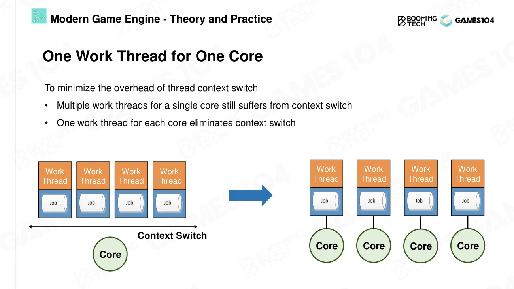
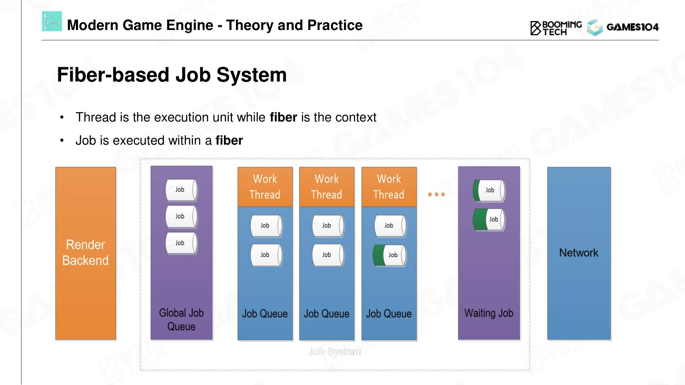
常见坑
把 fiber 当线程用、开成千上万个 → 每个 fiber 要预留栈，内存暴涨 → 用 fiber 池并限制数量。
在无栈协程里试图从子函数 yield → 编译不过或行为异常 → 改用有栈协程，或把逻辑改写成状态机。
job 里做阻塞 IO/等锁 → 占住工作线程，其他 job 饿死 → job 内只做纯计算，阻塞操作放回主线程或异步系统。
UE / Unity 落地
UE 的 TaskGraph 工作线程上跑任务，任务内部应避免长时间阻塞；需要等待时用依赖而不是忙等。
Unity 的 Job 不能访问托管对象、不能阻塞，正是为了保证工作线程始终有活干；C# 的
async/await属于无栈协程思路，和 Job System 是两套机制。
066. 调度器细节：全局队列、LIFO/FIFO、依赖与工作窃取
Job System 的调度器要回答四个问题：
- 任务从哪拿？ 全局 job 队列 + 每个工作线程的本地队列。新任务通常先压入本地队列。
- 本地队列用什么顺序？ 课件对比了 FIFO（先进先出） 与 LIFO（后进先出）。大多数情况下任务依赖呈“树状”：父任务派生出子任务后等待它们完成，此时 LIFO 更优——先执行最近派生的子任务，能让父任务尽快满足依赖、释放栈空间，缓存也更热。
- 依赖怎么处理？ 任务带依赖计数，依赖未满足时不能执行；一个任务完成时递减后继的计数，减到 0 就绪入队。
- 某个线程闲了怎么办？ 工作窃取（Job Stealing）：从其他线程的队列尾部偷任务执行，实现负载均衡。
课件也总结了 Job System 的优缺点：优点是任务调度易实现、依赖好表达、job 栈相互隔离、避免频繁线程创建；缺点是调试困难（调用栈不直观）、fiber 实现复杂、对不熟悉并行的程序员有学习成本。
一句话：调度器的目标不是“公平”，而是“让所有核心尽量不闲，同时让依赖尽快满足”。
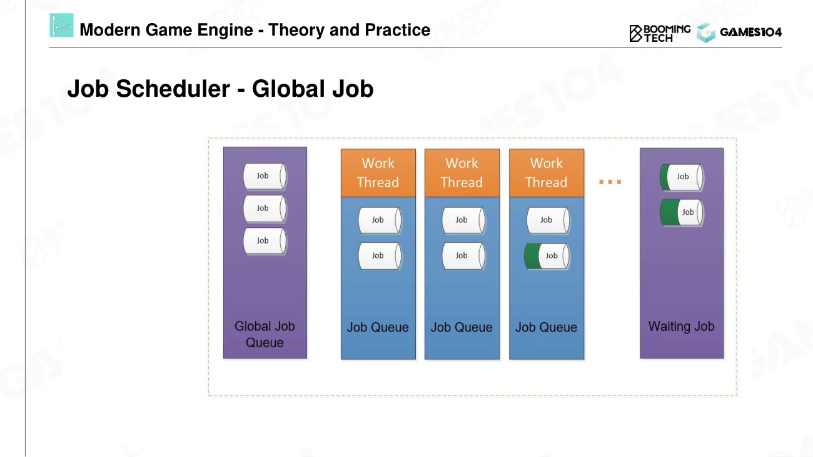
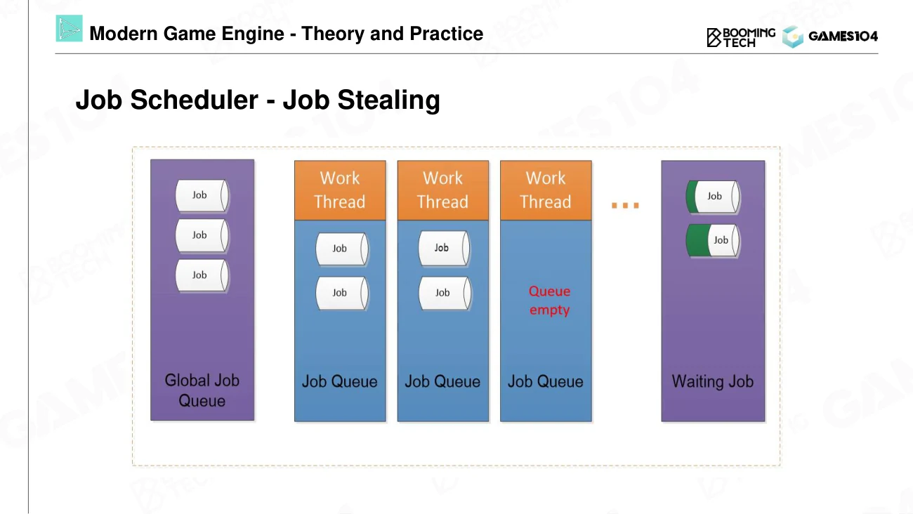
常见坑
所有任务都放全局队列 → 锁竞争激烈 → 每个线程维护本地队列，全局队列只做兜底。
依赖计数用普通整数且多线程更新 → 丢更新导致任务永远不就绪 → 用原子操作维护依赖计数。
工作窃取偷到“正在被等待”的任务 → 重复执行或死等 → 任务状态机要区分“已入队/执行中/已完成”，窃取只取就绪任务。
UE / Unity 落地
UE 的 TaskGraph 同样有工作线程与任务队列，
FGraphEvent维护前置依赖计数；业务上你只需DispatchWhenReady并传依赖，不必自己写窃取逻辑。Unity 的 Job System 由原生调度器负责把 job 分配到工作线程，C# 层只声明依赖（
JobHandle.CombineDependencies）。
077. 从 OOP 到 DOP：对象范式在引擎里的三个痛点
课件先回顾了编程范式：面向过程（POP）把任务拆成变量和例程一步步执行；面向对象（OOP）把数据和行为封装进对象，符合人的直觉，也是游戏引擎长期的主流。
但在大型引擎里，OOP 暴露出三个具体问题：
- 代码放哪？
Attacker.doDamageTo()还是Victim.receiveDamage()？Player.attachTo()还是Enemy.isAttached()？行为归属没有唯一正确答案，团队越大越容易吵。 - 继承树里方法散射：方法可能实现在很远的父类里，读代码要一路往上翻；基类越来越“胖”（课件以 UE 的
AActor为例，基类上堆了大量通用方法），子类被迫继承一堆用不到的东西。 - 性能与可测性：对象在内存里分散，遍历时缓存不友好；虚函数调用像“丛林”一样难以预测；单元测试一个对象往往要先初始化一大套依赖。
DOP（Data-Oriented Programming，面向数据编程）的出发点正好相反：先关心数据长什么样、怎么在内存里排布、怎么被批量处理，再考虑代码组织。课件用一句话概括：“数据就是我们拥有的一切”——粒子、静态模型、地形网格、联盟信息、距离……都是数据。
注意：DOP 不是“消灭 OOP”，而是把热路径（每帧处理成千上万实体的部分）换成数据友好的写法；编辑器、UI、工具链继续用 OOP 完全没问题。
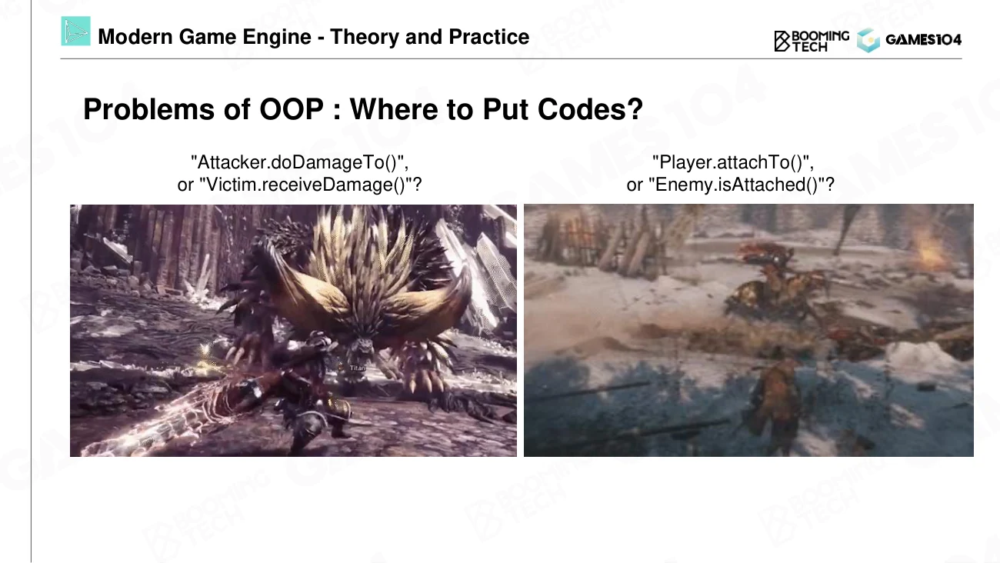
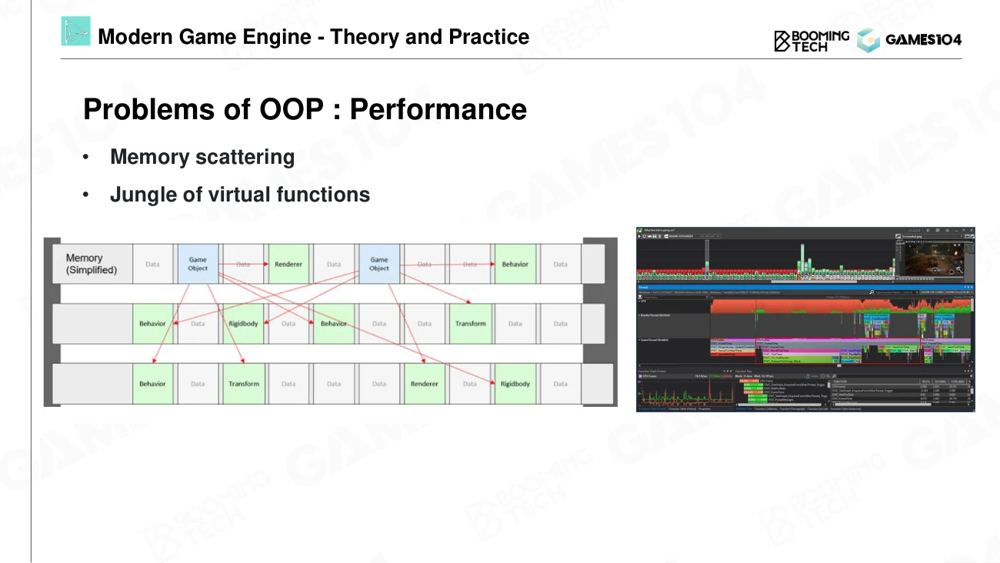
常见坑
把 DOP 理解成“所有代码都不能用类” → 矫枉过正、可读性崩坏 → 只对批量热数据用 DOP，工具层照旧 OOP。
继承层次过深 → 改基类影响所有子类、编译变慢 → 用组合（Component）替代继承。
在热循环里调用虚函数 → 分支预测失败、无法内联 → 把行为提出来按类型批量处理。
UE / Unity 落地
UE 的
AActor基类庞大正是课件举的例子；实践中用 Component（UActorComponent）做组合，减少继承。Unity 的传统
GameObject+MonoBehaviour也是 OOP 组合模型，DOTS 则是为高性能场景准备的另一条路径。
088. 缓存为王：局部性、缓存行、伪共享与数据布局
这一节是全讲的技术核心。先看事实：处理器性能增长远快于内存，这个“处理器-内存性能差距”让内存访问成为瓶颈，于是有了多级缓存：L1 很小（几百 KB 量级）但极快，L2/L3 依次变大变慢。
缓存能起作用，靠的是局部性原理（Principle of Locality）：
- 时间局部性：刚访问过的数据很可能马上再被访问；
- 空间局部性：访问了某个地址，附近地址很可能马上被访问。
数据在内存和缓存之间按固定大小的块搬运，这个块叫缓存行（Cache Line）。缓存满了按 LRU（最近最少使用） 淘汰。一次缓存未命中（Cache Miss）要等几十到上百个周期，所以“访问模式”比“指令条数”更能决定性能。
由此得到几条非常实用的优化手段：
- 按行优先遍历：二维数组用行主序访问，命中率高；按列跳着访问会反复未命中（课件用 L1 缓存行做了迭代顺序对比）。
- AoS → SoA：
struct Particle { pos, vel, color }的数组是“结构体数组”（AoS）；改成pos[N], vel[N], color[N]的“数组结构体”（SoA），当系统只更新位置时，缓存行里全是有效数据，不浪费带宽。 - 减少指针追逐：链表每个节点一次间接访问就是一次潜在未命中；能连续存储就连续存储。
- 避免伪共享（False Sharing）：两个线程分别高频写同一缓存行里的不同变量，缓存行在核间来回弹，性能暴跌；把高频写的变量按线程隔离/填充到不同缓存行。
- 减少分支预测失败：CPU 会预取指令和数据，分支猜错要清空流水线；可以用无分支写法、排序后再处理、或“只处理存在的元素”（existential processing）来规避。
- 降低顺序依赖：不要反复修改同一变量造成长依赖链，让指令能并行。
课件还提醒：指令也是数据，代码本身也占缓存（指令缓存），所以“代码和数据在内存里都保持紧凑、成批处理”是通用原则。
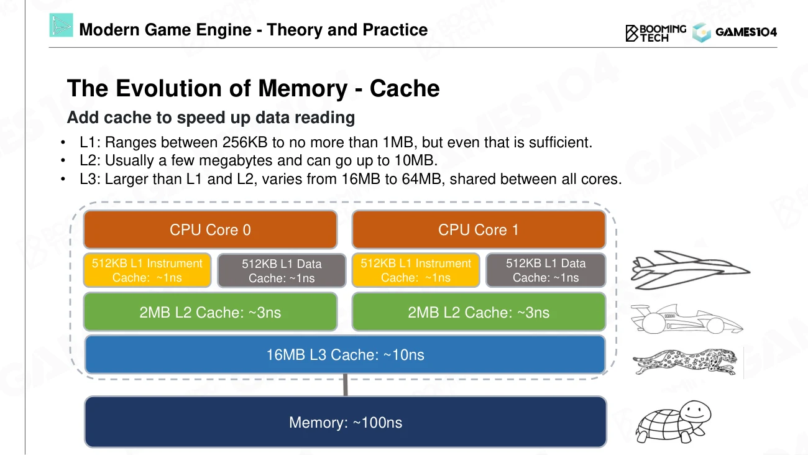
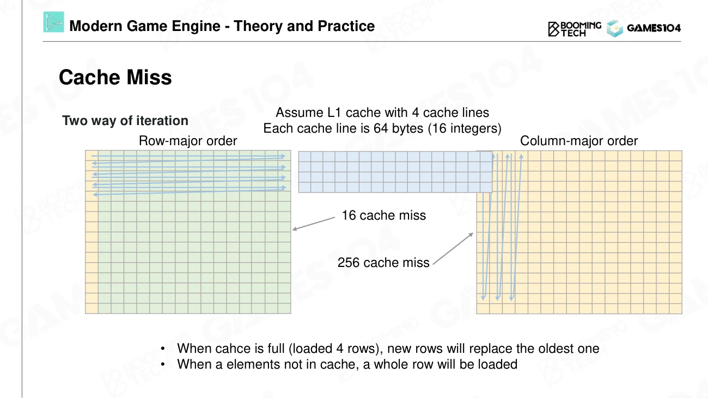
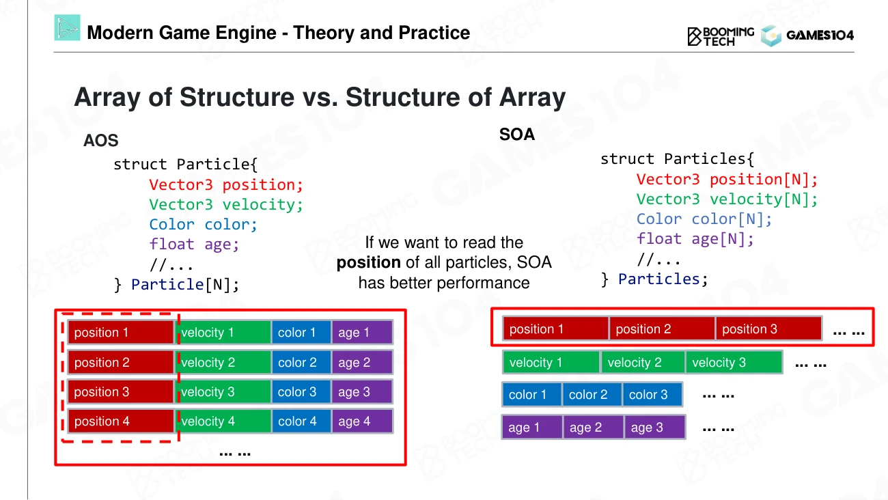
常见坑
多线程各自更新同一结构体里的相邻计数器 → 伪共享导致缓存行来回同步 → 按线程拆分数据或做缓存行填充。
热循环里用链表/指针树遍历 → 每次解引用都可能未命中 → 改成连续数组 + 索引。
在百万次循环里写难以预测的
if→ 分支预测失败清流水线 → 排序数据、查表或无分支写法。只优化指令条数不看访存 → 指令少了但缓存未命中更多 → 用 profiler 看 cache miss 而不是凭感觉。
UE / Unity 落地
Unity DOTS 的 Archetype 把同种组件紧凑打包进 Chunk，正是 SoA/缓存友好的工程化；Burst 编译器则负责生成 SIMD 指令。
UE 的 Mass 框架把 Fragment（纯数据）按 Archetype 连续存储，Processor 批量遍历，思路与 Unity ECS 一致。
099. ECS 落地：Unity DOTS 与 UE Mass 的对应关系
ECS（Entity Component System） 是用数据导向方式组织游戏代码的模式，目标是最大性能：
- Entity：一个 ID，代表场景里的一个东西；本身不含数据。
- Component：纯数据，挂在 Entity 上（如位置、速度）。
- System：批量处理“拥有某组组件”的所有 Entity 的逻辑。
课件先回顾了组件化设计，再讲 Unity DOTS 的三件套：
- ECS：按 Archetype（原型） 给 Entity 分组——组件组合相同的 Entity 属于同一 Archetype；同一 Archetype 的组件数据被紧凑打包进 Chunk，对缓存极其友好。System 继承
SystemBase，在OnUpdate里用查询遍历。 - C# Job System：把工作拆成小 job，用
JobHandle表达依赖；job 内只能访问 NativeContainer（如NativeArray），并有安全检查（越界、释放后使用、数据竞争）。 - Burst 编译器：面向 HPC#（高性能 C# 子集），放弃大部分标准库（如字符串格式化），把 C# 编译成高度优化的原生代码，配合 SIMD。
UE 的 Mass 框架是同一思路的另一套实现：
FMassEntityHandle是纯 ID（Index + SerialNumber），对应 ECS 的 Entity；- 组件叫 Fragment，用
FMassArchetypeCompositionDescriptor描述 Archetype； - 系统叫 Processor，继承
UMassProcessor，实现ConfigureQueries()（初始化时声明查询）与Execute()（批量执行）； - 用
FMassEntityQuery过滤 Archetype，Execute里通过FMassExecutionContext批量取 Fragment 数组。
对照记忆：Unity 的 Entity ≈ UE 的 FMassEntityHandle；Component ≈ Fragment；System ≈ Processor；Archetype/Chunk ≈ Archetype。
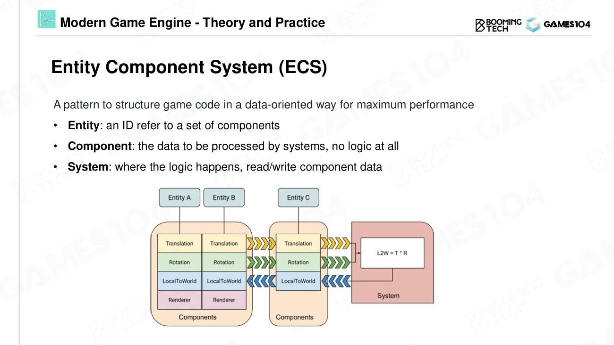
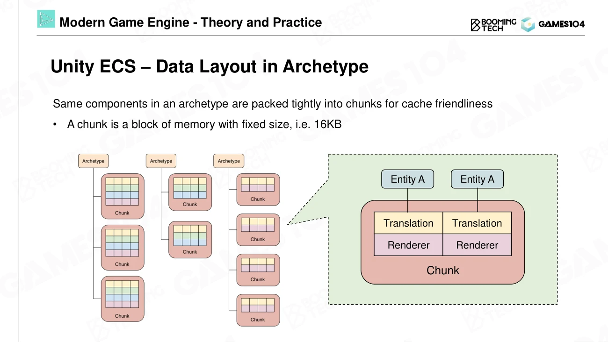
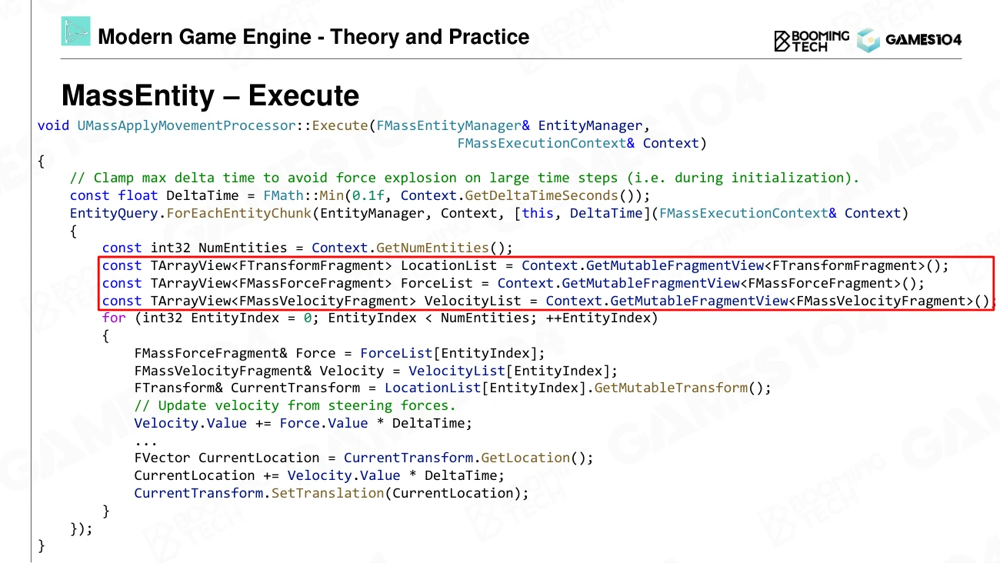
常见坑
把逻辑写进 Component → 组件不再是纯数据，无法紧凑存储和批量处理 → 逻辑放 System/Processor。
在 Job/Processor 里访问托管对象 → Unity 直接报错，UE 里也会破坏批量处理 → 用 NativeContainer/Fragment 等纯数据类型。
Archetype 频繁增删组件 → 实体在 Chunk 间搬家，开销大 → 尽量在生成时确定组件组合，避免运行时频繁改结构。
UE / Unity 落地
Unity：安装 Entities、Burst、Collections 包；
SystemBase.OnUpdate中用Entities.ForEach或IJobEntity写逻辑；数据用NativeArray/NativeList。UE：启用 MassEntity 插件；自定义
UMassProcessor子类，在ConfigureQueries()里AddRequirement/AddOptional，在Execute()里用Context.GetFragmentView<T>()批量取数据。
引擎对照表
| 概念 / 效果 | Unreal Engine | Unity |
|---|---|---|
任务依赖图 | TaskGraph： | C# Job System： |
工作线程池 | TaskGraph 的工作线程（Worker Thread）与命名线程（GameThread/RenderThread） | Job System 原生工作线程，C# 层不直接管理 |
实体 ID |
| ECS 的 |
纯数据组件 | Fragment（如 |
|
批量处理逻辑 |
|
|
缓存友好存储 | Mass 按 Archetype 连续存储 Fragment | Archetype + Chunk 紧凑打包 |
术语双语表
| English | 中文 | 说明 |
|---|---|---|
| Data Race | 数据竞争 | 多线程同时访问同一内存且至少一个写，结果依赖调度顺序。 |
| Context Switch | 上下文切换 | 保存/恢复线程状态，需进内核，开销远大于函数调用。 |
| Atomic Operation | 原子操作 | 不可分割的读改写，用于无锁编程。 |
| Memory Barrier | 内存屏障 | 约束编译器/CPU 重排，保证读写顺序可见性。 |
| Task Graph | 任务图 | 用 DAG 表达任务与依赖，节点是任务、边是依赖。 |
| Fiber | 纤程 | 用户态手动调度的执行上下文，切换不陷入内核。 |
| Job Stealing | 工作窃取 | 空闲线程从其他线程队列偷任务，实现负载均衡。 |
| Cache Line | 缓存行 | 内存与缓存间搬运的固定大小数据块。 |
| False Sharing | 伪共享 | 多线程写同一缓存行不同变量，导致缓存行来回同步。 |
| ECS | 实体组件系统 | Entity 是 ID、Component 是数据、System 是批量逻辑的数据导向模式。 |
课后练习
01 解释为什么“线程数越多并行越快”是错的，并说明 Job System 为什么用固定数量的工作线程。
查看答案
提示：
从上下文切换、缓存、负载均衡三个角度想。
线程超过物理核心数后，OS 要在有限核心上轮转更多线程，上下文切换（保存/恢复寄存器、栈、进内核）开销增加；同时多线程争用缓存会降低命中率。Job System 让工作线程数约等于核心数，把“任务”而非“线程”作为调度单位，任务在固定线程上执行，避免频繁创建/切换线程，从而把开销压到最低。
02 一个粒子系统有 100 万个粒子，每帧只更新位置。分别用 AoS（struct {vec3 pos; vec3 vel; color c;} 的数组）和 SoA（pos[N], vel[N], color[N]）存储，说明哪种更快以及原因。
查看答案
提示：
想想缓存行里装了什么。
SoA 更快。更新位置只需要 pos 和 vel，SoA 下连续内存里全是 pos（或 vel），一个缓存行装的全是有效数据；AoS 下每个粒子的 pos/vel/color 交错存放，缓存行里混入大量本帧用不到的 color，有效带宽利用率低，缓存未命中更多。
03 两个线程分别高频自增同一结构体里的 counterA 和 counterB，两者在内存中相邻。程序正确但很慢，为什么？怎么改？
查看答案
提示：
关键词：缓存行。
这是伪共享：counterA 与 counterB 落在同一缓存行，两个核心反复写同一行，缓存行在核间来回失效/同步，性能暴跌。改法：把两个计数器按缓存行大小对齐/填充（padding）到不同缓存行，或让每个线程维护本地计数、最后合并。
04 画出一个任务图：A 完成后才能做 B 和 C，B、C 都完成后才能做 D。说明调度器如何用依赖计数判断 D 就绪。
查看答案
提示：
每个任务记录“还有几个前置未完成”。
DAG：A→B，A→C，B→D，C→D。D 的依赖计数初始为 2；A 完成后派发 B、C；B 完成时 D 计数减为 1，C 完成时减为 0，D 就绪入队。计数更新需原子操作，避免多线程丢更新。
05 在 Unity DOTS 或 UE Mass 中任选其一，说明 Entity/Component/System 三者在 API 上的对应物，并解释 Archetype/Chunk 为什么对缓存友好。
查看答案
提示：
Unity：Entity、IComponentData、SystemBase；UE：FMassEntityHandle、Fragment、UMassProcessor。
以 Unity 为例：Entity 是 ID；IComponentData 是纯数据组件；SystemBase 的 OnUpdate 批量处理。组件组合相同的 Entity 归入同一 Archetype，其组件数据紧凑打包进 Chunk，System 遍历时连续访问内存，缓存行利用率高、未命中少。UE Mass 对应为 FMassEntityHandle、Fragment、UMassProcessor，Fragment 同样按 Archetype 连续存储。